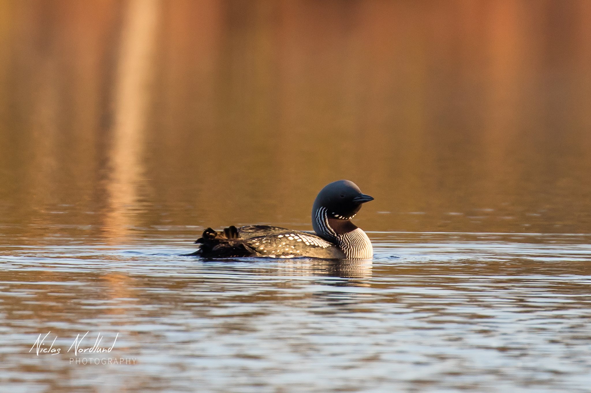

Otto Fearnley, Magnus Hansen Åsheim, Martin Vågseter Jakobsen, Erik Olsen Bøhle og Michael Brusegard
4. oktober 2022

Administrative Details
Our client is Niclas Nordlund, a photographer from Åland, Finland.
He is a freelance photographer who specializes in photos of animals,
landscapes, events and more. Additionally, he sells calendars, and
wants an easier way for customers to reach him.
Purpose, goals and audience
The main purpose of the website will be to promote and showcase Niclas'
previous photography work, as well as trying to implement a payment solution
for purchasing calendars/photos. The main audience for the website is
professional customers interested in Niclas’ photos.
Navigation Structure
The basis of our navigation structure is a simple rollover menu at the top of the page.
Here, the home page (home.html), which is also our landing page, is always accessible
from any other page on our website. We feature a "showcase mode" and a "shopping mode",
where the rollover menu changes based on which mode we are in, including links to
different categories of pages.
The purpose of the showcase mode is to easily be able to navigate between any of the pages
related to browsing the photo showcase, namely the home.html, landscapes.html, animals.html,
portraits.html, weddings.html and calendars.html pages. We also include a link to the shop.html
page within the rollover menu of the showcase mode. The purpose of the shopping mode is to easily
navigate between the shop.html and checkout.html pages, where the only way back to the showcase
mode is through a link to the home page (found in the rollover menu).
We aim to make the transition between modes as intuitive as possible, so that the user may freely
decide to either browse or shop without getting stuck. The storyboard figure below shows how each page
is connected, and how the shopping mode is somewhat isolated from the showcase mode.
Figure 1: Preliminary website story board. Each box is color coded based on which category they
belong to: green = showcase mode, yellow = shopping mode, blue = home page
Page Layout and Appearence
Our thought process on how the website should look and work, was to make it as easy as possible to navigate,
while also not hurting the eyes of the user. The colors we use for the background will be simple,
and not overcomplicated to not take focus away from the photographies.
We have made different categories where the customers can look at
photos that might interest them. When the customer are browsing each page,
the category of that page will light up to show which one the customer is browsing.
The site where the user will be able to shop photos will be accessible from every catergory,
making it simple for the customers to use. The home page will contain information about Niclas,
and will be accessible from every single page on the website.
The font we have used is easy to read, while also looking a bit fancy. Kind of like his signature.
In the footer element, we will add all of Niclas' contact information, as well as social media so that
customers will be able to get updates on new photographies, calendars etc.
The website will be responsive to smaller screens, which means it will be easier to use a mobile phone while looking/shopping.
Figure 2: Generic features mockup
Go through bullet points here ...
Content
stuff
1. home.html
stuff
2. landscapes.html
stuff
3. animals.html
stuff
4. portraits.html
stuff
5. weddings.html
stuff
6. calendars.html
stuff
7. shop.html
stuff
8. checkout.html
stuff
Minimum Requirements
stuff
1. something.js
stuff
2. something.js
stuff
3. something.js
stuff
4. something.js
stuff
Plan
stuff
Directory structure
All project files are contained under a "Site" directory on the folk.ntnu servers. The project hieracrhy will be structured as follows:
stuff
Work Division and Deadlines
The following table is copy pasted from the example project:
Filename
Description
In charge
Deadline
homepage.html
The homepage
Trond
04.11.2015
about.html
Brief biography about Nan Nan and the work that she does
Guttorm
04.11.2015
inspirations.html
Information on Myanmar’s art and culture
Birgit
04.11.2015
artwork_paintings.html
Nan Nan's paintings
Trond
04.11.2015
artwork_design.html
Nan Nan's design and crafts
Ellen
04.14.2015
atutu_childrenArtwork.html
Information on the children and display of their artwork
Birgit
04.14.2015
atutu_aboutTheSchool.html
Information on the school and classes
Meltem
04.14.2015
atutu_volunteerAndDonate.html
Volunteer and donation information
Trond
04.14.2015
supportAndContactUs.html
Information on contacting and supporting Nan Nan and Atutu
Birgit
04.14.2015
headerLogo.png
Logo for the header: children's drawing edited on Photoshop
Ellen
04.15.2015
menu.part
Birgit
04.16.2015
randomImages.js
A Javascript to randomly display images of artwork
and the school
Guttorm
04.18.2015
artWorkPrices.js
A Javascript using loops and arrays to correlate Nan Nan's
artwork with the respective prices
Trond
04.20.2015
rollOverMenu.js
A Javascript for a roll over menu when hovered upon
Guttorm
04.18.2015
imageSize.js
A JavaScript to add an interactive size attribute
Ellen
04.20.2015
styling.css
The CSS file containing all styling for the website
All
04.30.15
Final controls
Double checking each file for errors, checking the javascript and css